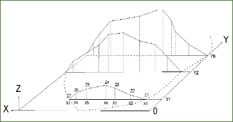
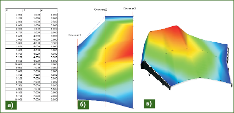
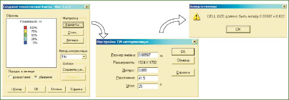

Вычисление объема средствами MapInfo Professional
Автор: В.Ф. Кутырев ©2008
В 1986 г. окончил Пермский политехнический институт по специальности «маркшейдерское дело». Работал в ОКЭ № 308 («УралМаркшейдерия», Челябинск). С 1992 г. работает в ОАО «Сильвинит» (Соликамск), в настоящее время – начальник подземной маркшейдерской партии.
Статья опубликована в 3-ем номере журнала Геопрофи в 2008 году.
Одной из основных задач в маркшейдерской практике является определение объема различных объектов (склада, отвала, насыпи и т. д.). До недавнего времени задачи такого рода решались вручную с применением калькулятора. В инструкциях по проведению маркшейдерских работ вычисление объема предлагается выполнять способом горизонтальных и вертикальных сечений, с помощью геометрически правильных тел или фигур и другими способами, обеспечивающими необходимую точность результата. С появлением геоинформационных систем (ГИС) и электронных средств измерений, таких как электронные тахеометры и лазерные рулетки, задача значительно упростилась. У маркшейдеров открылась возможность использовать программное обеспечение, которое позволяет значительно сократить затраты времени для решения данной задачи, а его интерфейс прост и понятен.
Многолетний опыт работы в ГИС MapInfo Professional (MapInfo Corp., США) доказал правильность выбора этой системы как наиболее доступной, простой и многофункциональной для решения различных маркшейдерских задач, включая вычисление объема. Вычисление объема по результатам маркшейдерских замеров с помощью ГИС MapInfo Professional обеспечивается горизонтальными и вертикальными сечениями с визуальным контролем данных. Использование обоих способов позволяет повысить точность результата, достоверность информации и качество камеральных работ.
Рассмотрим порядок вычисления объема способом вертикальных сечений по результатам полевых наблюдений. Полевые измерения пространственных координат X, Y, Z выполняются относительно условного центра в условной системе координат (рис. 1).

Рис. 1
Схема полевых измерений
В качестве плановой координаты Х принимают значения расстояний, измеренных вдоль сечения до каждого съемочного пикета Х1, Х2, … Х7, а плановой координаты Y – значения расстояний между сечениями Y1, Y2, … Yn.
Координата Z представляет собой приращение по высоте от нулевого уровня для каждого пикета в сечении Z1, Z2, … Z7. Количество сечений определяется необходимой и достаточной точностью вычисления объема. В ГИС MapInfo сечение строится на карте с помощью функции «Полигон» в масштабе 1:1, удобном для просмотра, а площадь сечения определяется через запрос, с помощью функции «Подписи».
Для контроля построенного сечения и длин линий используется функция «Линейка». В этом случае при активизации функции «Подписи» на экране компьютера отображается конфигурация и площадь каждого сечения. Данный прием позволяет визуально контролировать геометрию и площадь построенного сечения. Далее объем вычисляется как сумма произведения усредненной площади соседних сечений на расстояние между ними. При одинаковом расстоянии между сечениями объем определяется по формуле:
V = (S1 + … + 2Si + … + + Sn) H/2,
где S1, Si, Sn – значение площади каждого сечения; H – расстояние между сечениями.
Для визуального контроля результатов полевой съемки измеренные данные вводятся в виде таблицы (рис. 2а). По этим данным строятся точечные объекты, и создается тематическая карта по типу «Поверхность» (рис. 2б). Затем строится трехмерная модель (рис. 2в), и визуально анализируется плавность цветового перехода на предмет выраженных пятен, резких пиков или провалов поверхности, что свидетельствует об ошибках измерения или ввода исходных данных.

Рис. 2
Контроль вычисления объема способом вертикальных сечений:
а) таблица данных; б) тематическая карта «Поверхность»; в) трехмерная модель
Способ горизонтальных сечений в большей степени повторяет технологию вычисления объема вертикальными сечениями. После построения поверхности загружается дополнительный модуль «Поверхность». Затем строятся горизонтали с шагом (сечением), обеспечивающим необходимую и достаточную точность. Уменьшение шага увеличивает точность определения объема и, одновременно, время, затрачиваемое на обработку. Следующим этапом является преобразование горизонталей в площадные объекты. Далее, аналогичным образом, как и с вертикальными сечениями, получаем площади и вычисляем объем по приведенной выше формуле.
Следует отметить, что для получения максимальной точности определения объемов, построение тематической карты «Поверхность» должно выполняться по минимальной величине ячейки так, как показано на рис. 3.

Рис. 2
Построение тематической карты «Поверхность» по минимальной величине ячейки
Рассмотренный пример вычисления объема с помощью внутренних функций ГИС MapInfo Professional требует хорошего знания программы и технологии построений. Эти недостатки отсутствуют в программе Objem.exe, разработанной на основе ядра MapInfo Professional. Построения и вычисления в ней соответственно оформлены и легко выводятся на печать.
RESUME
The procedure of computing a quantity of fill and cut (dump, bank, etc.) using the mine survey results with the help of GIS MapInfo Professional is described. A possibility of increasing the computation accuracy using horizontal sections as well as of visual controlling the capacity computation is marked.
Загрузить оригинал статьи (221 KB) >>>
Загрузить копию (ZIP, 208 KB) >>>